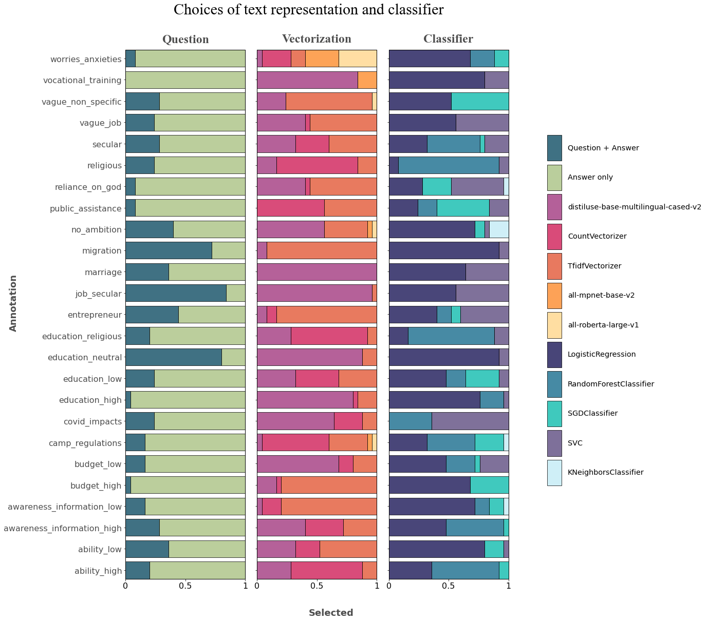
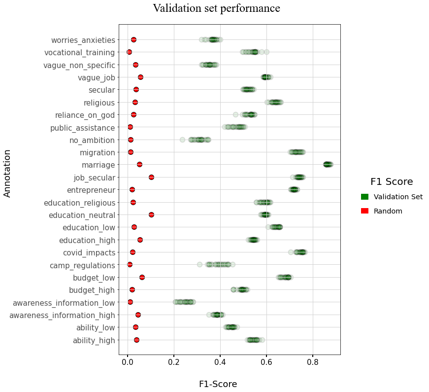

Model - Bootstrap#
Imports#
import os
import numpy as np
import pandas as pd
from sklearn.model_selection import train_test_split
from iqual import iqualnlp, evaluation, crossval
Load annotated (human-coded) and unannotated datasets#
data_dir = "../../data"
human_coded_df = pd.read_csv(os.path.join(data_dir,"annotated.csv"))
uncoded_df = pd.read_csv(os.path.join(data_dir,"unannotated.csv"))
Configure training data#
### Select Question and Answer Columns
question_col = 'Q_en'
answer_col = 'A_en'
### Select a code
code_variables = ['religious', 'secular', 'no_ambition', 'vague_job',
'job_secular','vocational_training', 'entrepreneur',
'education_low','education_neutral', 'education_high',
'education_religious', 'marriage', 'migration',
'vague_non_specific', 'reliance_on_god', 'ability_high',
'ability_low', 'budget_high', 'budget_low',
'awareness_information_high','awareness_information_low',
'camp_regulations', 'covid_impacts', 'public_assistance',
'worries_anxieties',
]
# Scoring Dict for evaluation
scoring_dict = {'f1':evaluation.get_scorer('f1')}
Configure a Hyperparameter Grid for cross-validation + fitting#
## Paths for precomputed vectors created using `sentence-transformers`
dict_dir = "../../dictionaries"
### Sentence-Transformers precomputed vectors
sbert_models = ["all-mpnet-base-v2",'all-roberta-large-v1',"distiluse-base-multilingual-cased-v2"]
sbert_model_paths = [os.path.join(dict_dir,m+'.pkl') for m in sbert_models]
### Spacy precomputed vectors
spacy_models = ["en_core_web_sm"]
spacy_model_paths = [os.path.join(dict_dir,m+'.pkl') for m in spacy_models]
### All precomputed vectors
model_paths = [*sbert_model_paths,*spacy_model_paths]
PRETRAINED_QA_PARAMS = {
"Input":{"question":{"vectorizer":{"model":model_paths,"env":['saved-dictionary']}},"answer":{"vectorizer":{"model":model_paths,"env":['saved-dictionary']}}},
}
PRETRAINED_A_PARAMS = {
"Input":{"question":["drop"],"answer":{"vectorizer":{"model":model_paths,"env":['saved-dictionary']}}},
}
SKLEARN_QA_PARAMS = {
"Input":{
"question":{"vectorizer":{"model":['TfidfVectorizer','CountVectorizer'],"env":['scikit-learn'],'max_features':np.arange(1000,6500,1000)}},
"answer":{"vectorizer":{"model":['TfidfVectorizer','CountVectorizer'],"env":['scikit-learn'],'max_features':np.arange(1500,8500,500)}}
},
}
SKLEARN_A_PARAMS = {
"Input":{
"question":["drop"],
"answer":{"vectorizer":{"model":['TfidfVectorizer','CountVectorizer'],"env":['scikit-learn'],'max_features':np.arange(1500,8500,1000)}}
},
}
LOGISTIC_PARAMS = {"Classifier":{"model":["LogisticRegression"],"C":[0.001,0.01,0.1,0.1,1,10],'penalty':['l1','l2'],'solver':['saga']}}
RANDOM_FOREST_PARAMS = {"Classifier":{"model":["RandomForestClassifier"],"n_estimators":[100,200,400],'max_depth':[5,10,25]}}
SGD_PARAMS = {"Classifier":{"model":["SGDClassifier"],"loss":["modified_huber"],"penalty":["l2","l1"]}}
SVC_PARAMS = {"Classifier":{"model":["SVC"],"C":[0.001,0.01,0.1,0.1,1,10],'kernel':['linear','rbf']}}
KNN_PARAMS = {"Classifier":{"model":["KNeighborsClassifier"],"n_neighbors":[5,10,15,25],'weights':['uniform'],}}
VECTORIZATION_PARAMS = [PRETRAINED_QA_PARAMS,PRETRAINED_A_PARAMS,SKLEARN_QA_PARAMS,SKLEARN_A_PARAMS]
CLASSIFIER_PARAMS = [LOGISTIC_PARAMS,RANDOM_FOREST_PARAMS,SGD_PARAMS,SVC_PARAMS,KNN_PARAMS]
ALL_PARAM_COMBINATIONS = [{**vect_params, **clf_params} for vect_params in VECTORIZATION_PARAMS for clf_params in CLASSIFIER_PARAMS]
CV_SEARCH_PARAMS = [crossval.convert_nested_params(p) for p in ALL_PARAM_COMBINATIONS]
print(f"Number of hyperparameter configurations: {crossval.count_hyperparameters(CV_SEARCH_PARAMS)}")
Number of hyperparameter configurations: 1014
Model training:#
Cross-validate over hyperparameters and select the best model
NUM_BOOTSTRAP_RUNS = 25
bootstrap_dfs = []
cv_dfs = []
param_dfs = []
for bootstrap_run in range(1,NUM_BOOTSTRAP_RUNS+1,1):
train_df, test_df = train_test_split(human_coded_df,test_size=0.25)
train_df['split'] = 'train'
test_df['split'] = 'test'
uncoded_df['split'] = 'unannotated'
boot_df = pd.concat([train_df,test_df,uncoded_df])
boot_df['bootstrap_run'] = bootstrap_run
for code_var in code_variables:
print(f"Bootstrap {bootstrap_run} | Annotation: {code_var}")
## Create X and y
X = train_df[[question_col,answer_col]]
y = train_df[code_var]
# Create model
iqual_model = iqualnlp.Model()
iqual_model.add_text_features(question_col,answer_col)
iqual_model.add_classifier()
iqual_model.add_threshold()
iqual_model.compile()
# Run cross-validation and get best parameters
cv_dict = iqual_model.cross_validate_fit(
X,y, # X: Pandas DataFrame of features, y: Pandas Series of labels
search_parameters=CV_SEARCH_PARAMS, # search_parameters: Dictionary of parameters to use for cross-validation
cv_method='GridSearchCV', # cv_method: Cross-validation method to use, options: GridSearchCV, RandomizedSearchCV
# n_iter=5, # n_iter: Only when cv_method='RandomizedSearchCV'
scoring=scoring_dict, # scoring: Scoring metric to use for cross-validation
refit='f1', # refit: Metric to use for refitting the model
n_jobs=-1, # n_jobs: Number of parallel threads to use
cv_splits=3, # cv_splits: Number of cross-validation splits
)
## Selected Best parameters
selected_param_df = pd.DataFrame.from_dict(iqual_model.cv.get_best_params(),orient='index').T
selected_param_df['annotation'] = code_var
selected_param_df['bootstrap_run'] = bootstrap_run
param_dfs.append(selected_param_df)
# `NOTE`: Use `iqual_model.cv.get_cv_results()` to get more detailed cross-validation results.
## Cross-Validation data
print("\n\nAverage F1 score for {code_var}: {score:.3f}".format(code_var=code_var,score=cv_dict['avg_test_score']),end='\n\n')
cv_df = pd.DataFrame([cv_dict])
cv_df['annotation'] = code_var
cv_df['bootstrap_run'] = bootstrap_run
cv_dfs.append(cv_df)
# Get best parameters
best_params = iqual_model.cv.get_best_params()
# Initialize arrays to store CV predictions
cv_train_pred = np.zeros(len(train_df))
cv_train_proba = np.zeros(len(train_df))
# Create CV splitter with same parameters as used in cross_validate_fit
cv_splitter = crossval.Splitter(
'KFold',
thresh=0.1, # Minimum positive ratio threshold
attempts=10,
n_splits=3, # Same as cv_splits above
random_state=bootstrap_run,
shuffle=True,
)
# Get CV splits
cv_splits = list(cv_splitter.split(X, y))
# For each fold
for fold_idx, (train_idx, val_idx) in enumerate(cv_splits):
print(f"Processing fold {fold_idx + 1}/{len(cv_splits)}")
# Get fold training and validation data
X_fold_train = X.iloc[train_idx]
y_fold_train = y.iloc[train_idx]
X_fold_val = X.iloc[val_idx]
# Create and train model with best parameters
fold_model = iqualnlp.Model()
fold_model.add_text_features(question_col, answer_col)
fold_model.add_classifier()
fold_model.add_threshold(scoring_metric='f1') # Same as refit parameter
fold_model.compile()
# Set best parameters and fit
fold_model.set_params(**best_params)
fold_model.fit(X_fold_train, y_fold_train)
# Predict on validation fold
cv_train_pred[val_idx] = fold_model.predict(X_fold_val)
cv_train_proba[val_idx] = fold_model.predict_proba(X_fold_val)
# Store CV predictions in training dataframe
train_df[f"{code_var}_pred"] = cv_train_pred
train_df[f"{code_var}_proba"] = cv_train_proba
# Train final model on all training data for test and uncoded set predictions
final_model = iqual_model # Already trained on full training set during cross_validate_fit
# Predict on test set
test_pred = final_model.predict(test_df[[question_col, answer_col]])
test_proba = final_model.predict_proba(test_df[[question_col, answer_col]])
test_df[f"{code_var}_pred"] = test_pred
test_df[f"{code_var}_proba"] = test_proba
# Predict on uncoded data
uncoded_pred = final_model.predict(uncoded_df[[question_col, answer_col]])
uncoded_proba = final_model.predict_proba(uncoded_df[[question_col, answer_col]])
uncoded_df[f"{code_var}_pred"] = uncoded_pred
uncoded_df[f"{code_var}_proba"] = uncoded_proba
# Update boot_df with the modified dataframes containing predictions
boot_df = pd.concat([train_df, test_df, uncoded_df])
# Append after each bootstrap run
bootstrap_dfs.append(boot_df)
param_data = pd.concat(param_dfs)
bootstrap_data = pd.concat(bootstrap_dfs,axis=0)
Selected model parameters#
param_data = pd.concat(param_dfs)
# Best Parameters
param_data = param_data[['annotation','bootstrap_run','Input__question__vectorizer__model','Input__answer__vectorizer__model','Classifier__model']]
# Question: Drop | Keep
param_data.loc[param_data['Input__question__vectorizer__model'].isna(),'question'] = 'Answer only'
param_data.loc[param_data['Input__question__vectorizer__model'].notna(),'question'] = 'Question + Answer'
# Rename columns
param_data = param_data.rename(columns={'Input__answer__vectorizer__model':'vectorization','Classifier__model':'classifier'})
# Replace Dictionary paths of precomputed pkl files
param_data['vectorization'] = param_data['vectorization'].apply(lambda x: os.path.basename(x).replace('.pkl',''))
param_data = param_data[['annotation','bootstrap_run','question','vectorization','classifier']]
Plot parameter selections for each annotation across:#
Question/ Question + Answer
Vectorizer
Classifier
question_options = param_data['question'].unique()
vectorizer_options = param_data['vectorization'].unique()
classifier_options = param_data['classifier'].unique()
all_options = [*question_options,*vectorizer_options,*classifier_options]
colors = [
'#00425A','#A4BE7B',
'#9C2C77','#CD104D','#E14D2A','#FD841F','#FFD384',
'#0C084C','#096386','#00B7A8', '#544179', '#BFEAF5',
]
color_dict = {option:colors[o] for o, option in enumerate(all_options)}
import matplotlib.pyplot as plt
import numpy as np
# Subplots
fig, axs = plt.subplots(1, 3, sharey=True, figsize=(18,18))
# Title
fig.suptitle("Choices of text representation and classifier",x=0.4, y=0.99, fontfamily='Times New Roman',fontsize=30,)
# Empty lists - handles/labels for adding common legend later.
handles = []
labels = []
for i, (ax, col) in enumerate(zip(axs, ['question', 'vectorization', 'classifier'])):
param_df = param_data.groupby('annotation')[col].value_counts().unstack().fillna(0) / param_data.bootstrap_run.nunique()
bottom = np.zeros(len(param_df.index))
for j, key in enumerate(param_data[col].unique()):
values = param_df[key].values
h = ax.barh(param_df.index,
values,
color=color_dict[key],
alpha=0.75,ec='k',lw=1,
left=bottom
)
bottom += values
handles.append(h)
labels.append(key)
ax.grid(False)
ax.margins(0, 0, tight=True)
ax.set_title(col.capitalize(),fontdict={'family':'Times New Roman',
'fontsize':24,
'color':'#4e4e4e',
'fontweight':800
},
pad=15)
# Optional: Create a line at the boundary of each subplot
for pos in ['top','right','bottom','left']:
ax.spines[pos].set(lw=1,ec='k')
# X-axis
ax.set_xticks([0,0.5,1],labels=[0,0.5,1], fontsize=16, fontweight='light')
# Y-axis
ax.tick_params(axis='y',labelsize=16, labelcolor='#4e4e4e')
# X-axis label
fig.text(0.4, 0.07, 'Selected',fontdict={"fontsize":18,
'color':"#4e4e4e",
'weight':'bold'},)
# Y-axis label
fig.text(-0.05, 0.5,'Annotation',rotation='vertical',fontdict={"fontsize":18,
'color':"#4e4e4e",
'weight':'bold'},
)
# Legend
fig.legend(handles, labels, ncol=1, loc='center right',
frameon=False, labelspacing=0.5,
handlelength=2,handleheight=5,
fontsize='x-large')
# Plot
plt.subplots_adjust(top=0.92,wspace=0.1,right=0.7)
plt.show()

Plot Validation set performance#
### F1 score using random predictions --> sparsity of variable
random_f1_dict = dict(human_coded_df[code_variables].mean())
import matplotlib.patches as mpatches
fig, ax = plt.subplots(figsize=(10,12))
# Title
fig.suptitle("Validation set performance", x=0.4, y=0.95, fontfamily='Times New Roman',fontsize=24,)
# X-axis
ax.scatter(y=cv_df['annotation'],
x=cv_df['mean_test_f1'],
marker='o', s=100, ec='k',lw=2,color='g', alpha=0.1,
label='Validation Set'
)
ax.scatter(y=list(random_f1_dict.keys()),
x=list(random_f1_dict.values()),
marker='o',s=100,ec='k',lw=1,color='r',alpha=1,
label='Random'
)
# Y-axis
ax.set_yticks(cv_df['annotation'].unique())
ax.set_yticklabels(cv_df['annotation'].unique(), fontsize=16, fontweight='light')
ax.grid(True, lw=1, c='lightgray')
# X-axis
ax.tick_params(axis='x',labelsize=15, length=5, width=2)
# Y-axis
ax.tick_params(axis='y',labelsize=15, labelcolor='#4e4e4e')
# X-axis label
fig.text(0.35, 0.05, "F1-Score",fontsize=18)
# Y-axis label
fig.text(-0.2, 0.5,'Annotation',rotation='vertical',fontsize=18)
# Legend
patches = [
mpatches.Patch(color='green', label='Validation Set'),
mpatches.Patch(color='red', label='Random'),
]
fig.legend(handles=patches,
title='F1 Score',
title_fontsize=20,
ncol=1,labelspacing=1,handlelength=1,
loc='center right',frameon=False,
fontsize='x-large',
)
# Figure
plt.subplots_adjust(top=0.9,right=0.75)
plt.show()
